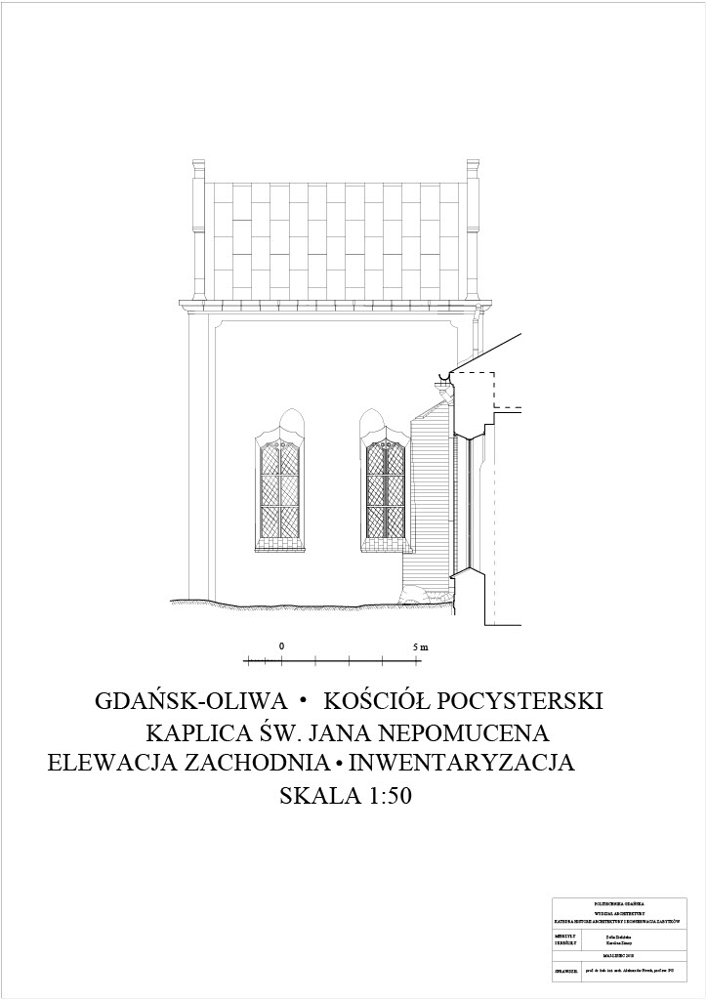
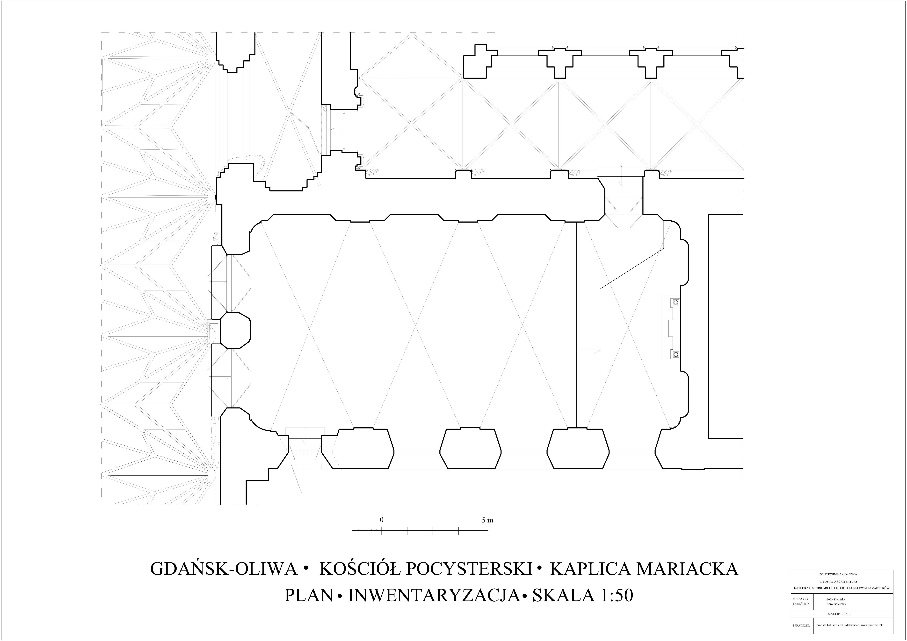

TECHNICAL DOCUMENTATION
Title: Measurements in a 16th century basilica Location: Gdańsk-Oliwa, Poland Made measurements in a chapel belonging to a 16th century basilica. These were the first measurements of this part of the object. They were used to collect documentation of the historical facility.

